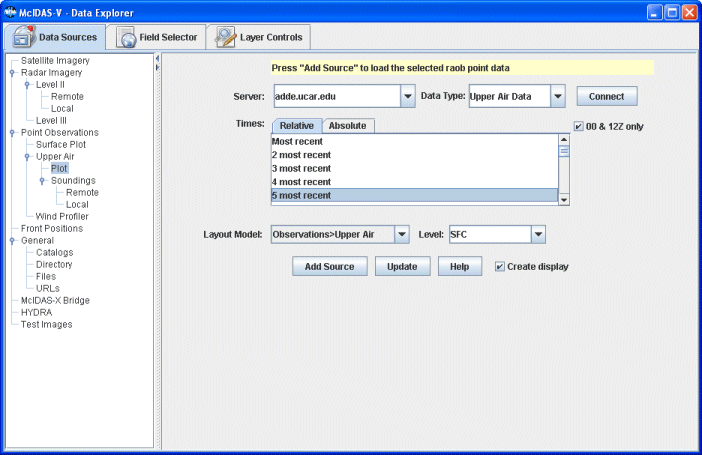

McIDAS-V User's Guide > Data Explorer >
Choosing Data Sources
McIDAS-V User's Guide > Data Explorer >
Choosing Data Sources

Choosing Upper Air Data
Upper air RAOB data can be displayed as single level point observations, or
as atmospheric balloon soundings.
Choosing Single Level RAOB Data
RAOB data can be selected (from an ADDE server) as a single level from
the Point Observations->Upper Air->Plot chooser. This data can then be displayed as a station model.

Image 2: Single Level RAOB Chooser
Properties
- Server:
Enter in a server name or choose one from the pull down menu. Right click in the entry box to delete the server from the list.
- Data Type:
Enter in a data type or choose one from the pull down menu.
- Connect
Click to connect to and query the server for available times.
- Times: Relative
Allows you to select a group of up to the last 50 times.
- Times: Absolute
Allows you to choose one or more absolute times. When choosing absolute times
for the first time McIDAS-V needs to query the ADDE server for the times. This
may take some time. To select more than one time use Control-Click or Shift-Click.
See the Timeline section for details on its use.
- 00 & 12Z only
When checked, only 00Z and 12Z soundings will be listed.
- Layout Model:
Select the station model to use when displaying this data as a point data plot.
- Level:
Choose the atmospheric level to display.
- Add Source
Click to load the selected RAOB data.
- Update
Click to update the RAOB chooser with the most recent data.
- Help
Click to bring up this help page.
- Create Display
When checked, the display will automatically be created.
Choosing RAOB Data (atmospheric balloon sounding)
You can access RAOB data as atmospheric balloon soundings either from remote
ADDE servers (using the Point
Observations->Upper Air->Soundings->Remote
chooser, pictured below) or from local files (using the Point Observations->Upper
Air->Soundings->Local chooser). The only difference between these two
choosers is specifying the source of data. You either select an ADDE server and
press or
you select a file containing RAOB data. For more information on how to use these
choosers, see Getting Started.
 Image 1: RAOB Chooser
Image 1: RAOB ChooserProperties
- Server:
Enter in a server name or choose from the pull down menu. Right click in the
entry box to delete the server from the list.
- Group:
Enter in a group name or choose one from the pull down menu. Right click in
the entry box to delete the group from the list.
- Connect
Click to connect to and query the server for available times.
- 00 & 12Z only
When checked, only 00Z and 12Z soundings will be listed in Available
Times:.
- Station Map
Click on one more more stations to populate the Selected Soundings: box.
Left clicking on a station
will select it. For multiple selections, Shift-drag will select all stations
within a region. Control-drag will add the stations in the selected region
to the set of already selected stations. Pressing the Control-A key will select
all stations. Right clicking in the map will bring up a menu that allows you
to select all stations and to clear the selection. The Declutter checkbox
allows you to show all stations (not checked), or only a limited number of
stations that do not overlap each other (checked). You will need to zoom in
to see all the stations without overlaps. Use the Zooming and Panning options
to locate a station, or the following buttons:
 Zoom In
Zoom In  Zoom Out
Zoom Out  Previous
Map Area
Previous
Map Area  Home
Map Area
Home
Map Area  Move View
Up
Move View
Up  Move View
Down
Move View
Down  Move View
Left
Move View
Left  Move
View Right
Move
View Right
- Available Times:
Select a single or set of dates and times to use. To select more than one time
use Control-Click or Shift-Click.
- Selected Soundings:
Soundings available for the times selected in the Available Times: will be shown for all stations selected.
- Add Source
Click to load the selected RAOB data.
- Update
Click to update the RAOB chooser with the most recent data.
- Help
Click to bring up this help page.
- Create Display
When checked, the display will automatically be created.
McIDAS-V User's Guide > Data Explorer >
Choosing Data Sources